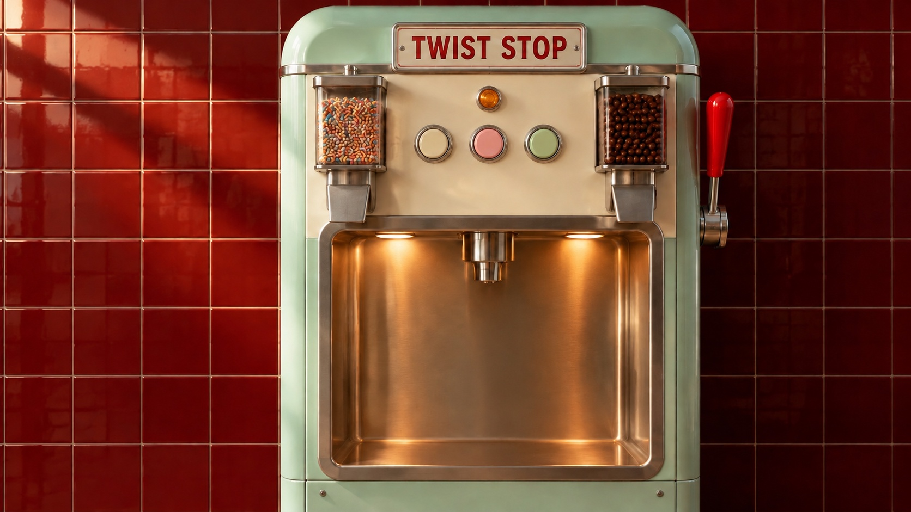

Twist
Stop
Pick a flavour, hold the red lever and pour your own cone. Then send it to a friend.
A little soft serve. 14 Linden Street.

Good things come to those who swirl.
0 of 6 turns
Vanilla selected. Ready to pour.
Two toppings.
The happy ending.
Rainbow sprinkles
Tiny bits of colour. A little crunch.
An excellent reason to smile.
Chocolate pearls
Little chocolate pops that make
every last bite a good one.
Before
you come.
Find us
14 Linden Street
The little mint counter.
Hours
Opening soon.
Good things are on the way.
Allergens
Milk, wheat, and nuts.
All flavours and toppings share equipment. Please ask at the counter before choosing your cone.